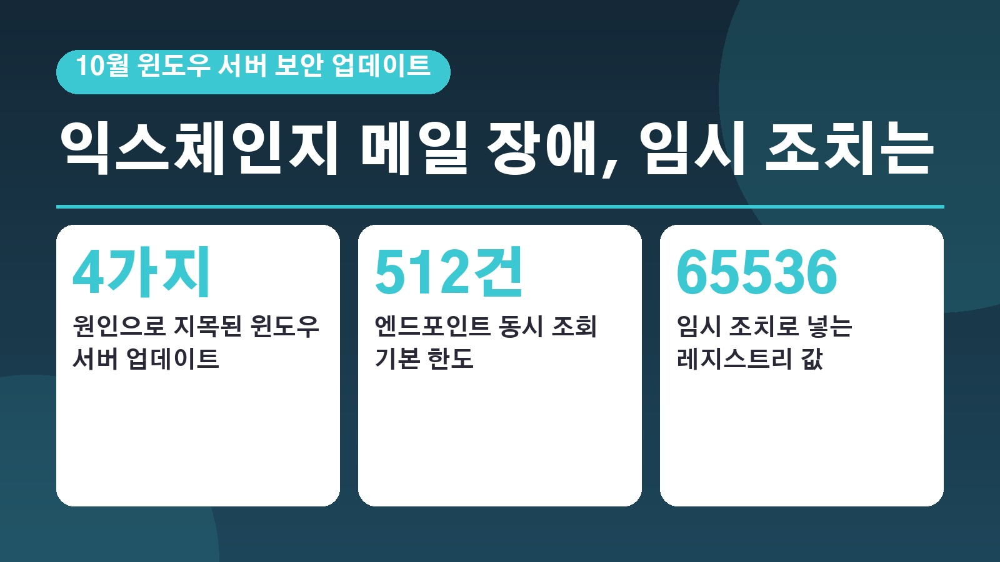
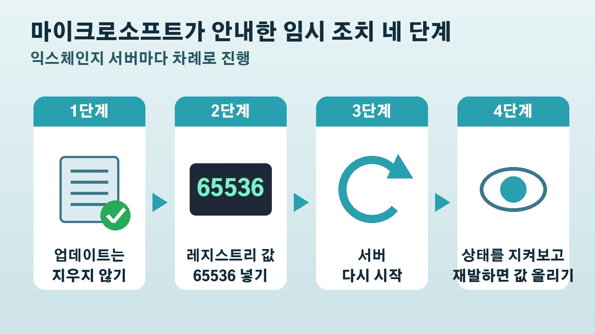

10월 윈도우 서버 보안 업데이트 뒤 익스체인지 메일이 멈춘다면, 업데이트는 지우지 말고 레지스트리 값 하나부터

회사 메일을 자체 서버로 운영하는 곳이라면 이번 주 들어 웹메일 로그인이 안 된다거나 보낸 메일이 한참 동안 나가지 않는다는 문의를 받으셨을 수도 있어요. 마이크로소프트가 10월 윈도우 서버 보안 업데이트를 설치한 뒤 일부 익스체인지 서버가 불안정해질 수 있다고 공식적으로 알렸습니다. 익스체인지 서버는 회사 안에 직접 설치해 쓰는 마이크로소프트의 메일 서버 프로그램이에요. 어떤 증상이 나타나는지, 원인은 무엇인지, 마이크로소프트가 안내한 임시 조치는 무엇인지 순서대로 정리해 드릴게요.
이런 증상이 보이면 의심해 볼 만합니다
마이크로소프트 익스체인지 팀은 현지시간 16일 공식 블로그에서 10월 13일 정기 업데이트 이후 익스체인지 서버가 불안정해졌다는 고객 신고가 들어오고 있다고 밝혔어요.
대표적인 증상은 이렇습니다. 웹에서 쓰는 아웃룩, 흔히 OWA라고 부르는 웹메일에 접속이 안 되면서 MapiExceptionMdbOffline 이라는 오류가 뜨고, 응용 프로그램 기록에 이벤트 번호 1006이 남을 수 있어요. 아웃룩에서 보낸 메일이 보낼 편지함에 머문 채 나가지 않거나, 하루 동안 메일 대기열이 계속 쌓이면서 메일 처리가 거의 멈추기도 합니다. 여러 대의 서버를 묶어 데이터베이스를 함께 지키는 구성, 이른바 DAG를 쓰는 곳에서는 서버들끼리 정상 운영에 필요한 합의를 이루지 못하는 문제도 보고됐어요.
헷갈리기 쉬운 점은 서버를 다시 시작하면 잠깐 괜찮아진다는 거예요. 하지만 일정 시간이 지나면 같은 장애가 다시 생길 수 있어서, 재부팅만으로는 안정적인 운영을 보장하기 어렵다고 보드나라는 전했습니다.
원인은 익스체인지가 아니라 윈도우 서버 업데이트
이번 문제에서 가장 중요한 부분은 범인이 익스체인지 업데이트가 아니라는 점이에요. 마이크로소프트는 같은 날 나온 익스체인지 서버용 보안 업데이트와는 관련이 없다고 분명히 밝혔고, 그래서 익스체인지 최신 업데이트를 설치하지 않은 서버에서도 똑같은 문제가 생길 수 있습니다. 익스체인지 서버 2016과 2019, 구독형인 익스체인지 서버 SE가 모두 영향을 받을 수 있어요.
익스체인지 팀이 원인으로 지목한 윈도우 서버 업데이트는 네 가지입니다. 윈도우 서버 2025용 KB5126646, 2022용 KB5126655, 2019용 KB5126651, 2016용 KB5126868이에요. 우리 서버에 이 업데이트가 깔려 있는지부터 확인해 보시면 됩니다.
블리핑컴퓨터가 전한 마이크로소프트 설명에 따르면, 10월 업데이트가 윈도우 안에서 프로그램끼리 연결을 이어 주는 안내 기능인 엔드포인트 매퍼에 새로 기본 한도를 걸었어요. 이 기능이 한 번에 처리할 수 있는 조회가 512건으로 묶였는데, 익스체인지처럼 일이 많은 서버에서는 이 한도가 부족할 수 있다는 겁니다. 그래서 모든 서버가 똑같이 영향을 받지는 않고, 부하가 많을수록 더 빨리, 더 심하게 문제가 나타나며 아예 문제가 없는 서버도 있을 수 있다고 마이크로소프트는 설명했어요.
마이크로소프트가 안내한 임시 조치 순서
마이크로소프트의 권고는 네 단계로 정리됩니다.

첫 단계는 10월 윈도우 서버 업데이트를 지우지 않는 거예요. 문제가 생기면 업데이트부터 되돌리고 싶어지지만, 마이크로소프트는 삭제하지 말라고 가장 먼저 못 박았습니다.
두 번째로 관리자 권한으로 연 명령 프롬프트에서 레지스트리의 Rpc 항목 아래에 EpmapSavedContextCap 이라는 숫자형 값을 새로 만들고, 그 값을 65536으로 정합니다. 레지스트리는 윈도우의 설정이 저장되는 곳이고, 이 값은 앞에서 말한 동시 조회 한도를 늘려 주는 역할을 해요. 마이크로소프트 익스체인지 팀 공식 글에 이 설정을 한 번에 넣는 한 줄짜리 명령어가 그대로 실려 있어요.
세 번째로 서버를 다시 시작합니다. 네 번째로 재부팅 뒤 상황을 지켜보면서 문제가 다시 생기면 한도 값을 더 올리면 돼요. 마이크로소프트는 지금까지 지원한 고객 사례에서 이 방법으로 문제가 풀렸다고 밝혔습니다.
조치한 뒤에도 끝이 아닌 이유
이 방법은 어디까지나 임시 조치예요. 마이크로소프트는 아직 근본 원인을 조사하고 있고, 정식 수정이 언제 나올지는 밝히지 않았습니다. 보드나라는 영향을 받는 시스템을 운영하는 관리자라면 업데이트 적용 뒤 익스체인지 서버의 서비스 상태와 메일 처리 상황을 계속 확인할 필요가 있다고 짚었어요.
한 가지 더 기억해 둘 일정이 있습니다. 블리핑컴퓨터는 마이크로소프트가 지난 7월, 익스체인지 2016과 2019에 대한 연장 보안 업데이트를 이번 달을 끝으로 더는 내놓지 않겠다고 발표했다고 전했어요.
같은 달 업데이트에서 함께 챙길 소식
이번 10월 정기 업데이트는 규모 자체가 컸어요. 보안뉴스와 위키트리에 따르면 마이크로소프트는 10월 13일 하루에만 1,400건이 넘는 결함을 고쳤고, 여러 매체가 역대 최대 규모로 전했습니다. 그 가운데에는 이미 실제 공격에 쓰인 윈도우 셸의 보안 기능 우회 결함도 들어 있어요. 인터넷에서 내려받은 파일에 붙는 보안 표시를 피해 갈 수 있는 결함이라, 경고 없이 위험한 파일이 열릴 수 있다는 점에서 주목받았습니다.
개인 사용자에게도 해당하는 소식이 있어요. 윈도우 11 24H2 버전의 홈과 프로 에디션은 이번 10월 업데이트가 마지막이라, 앞으로는 보안 수정을 받지 못합니다. 위키트리가 전한 지디넷 보도에 따르면 24H2 사용자는 설정의 윈도우 업데이트 화면에서 26H2 버전으로 올리라는 안내를 확인해야 해요.
참고한 기사: 마이크로소프트 익스체인지 팀 블로그 Exchange servers may become unstable after installation of October 2026 Windows updates 2026년 10월 16일, 보드나라 MS 윈도우 서버 10월 업데이트 후 익스체인지 서버 불안정 경고 2026년 10월 20일, 블리핑컴퓨터 Microsoft October Windows Server updates break Exchange sign in mail flow 2026년 10월 19일, 보안뉴스 하루 만에 결함 1411개 마이크로소프트 역대 최대 규모 10월 정기 패치 배포 2026년 10월 14일, 위키트리 마이크로소프트 10월 패치로 취약점 1,411건 수정 이미 악용된 제로데이도 포함 2026년 10월 15일
태그
익스체인지서버 윈도우서버업데이트 10월보안업데이트 마이크로소프트 OWA오류 메일발송지연 EpmapSavedContextCap 레지스트리 서버관리 윈도우11지원종료